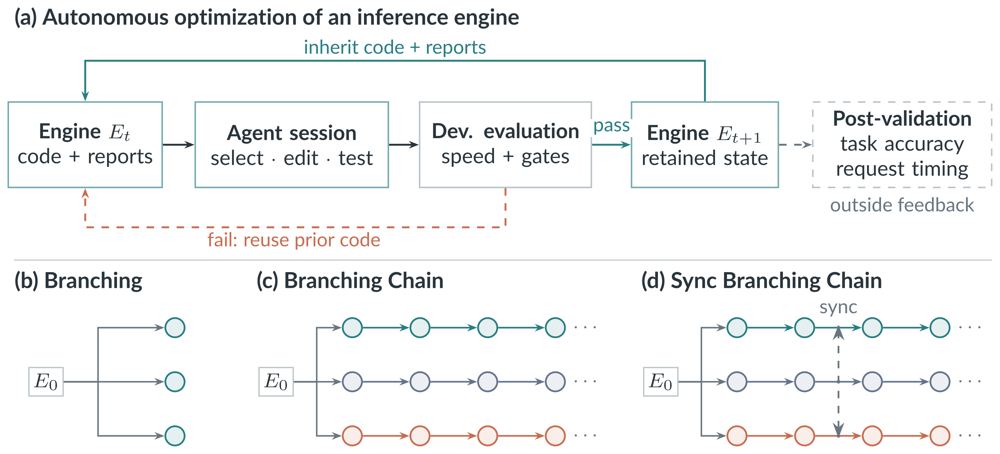

Build on earlier sessions.
Inherited code and reports let agents combine improvements over time. In these experiments, sustained chains outperform independent attempts.
Let AI agents evolve the entire inference engine.
The idea
Faster inference makes language models cheaper to serve. SEIS gives AI agents a working inference engine and lets them improve it end to end. Across successive sessions, agents investigate bottlenecks, rewrite code, test their changes, and build on the code and reports left by earlier sessions. Parallel chains can also exchange discoveries.
Starting from mini-sglang, the agents developed optimized GPU kernels, fused operators, improved runtime execution, and prompt-lookup speculative decoding. The agent stays fixed throughout; the engine's implementation evolves.

The result
Qwen3-0.6B · NVIDIA H100Single-request inference
3.27×
throughput over the original engine
594 → 1,942 tokens / second
89 ms
mean request latency
down from 295 ms
3.08×
without speculation
from kernel and runtime changes
The best engine's observed accuracy changes were +1.06 percentage points on GSM8K and −0.37 on long-input retrieval, relative to the original engine.
What we learn
Inherited code and reports let agents combine improvements over time. In these experiments, sustained chains outperform independent attempts.
Exchanging code across chains spreads working designs. The best engine combines its own kernels and runtime with a peer's decoding policy.
Speed and development checks tell only part of the story. Held-out task evaluation and code inspection expose failures that the optimization score misses.
@article{xu2026seis,
title = {{SEIS}: Self-Evolving Inference Systems},
author = {Xu, Zhen and Liu, Jingyu and Li, Zongze and
Rabbani, Tahseen and Zhang, Ce},
journal = {arXiv preprint arXiv:2610.04646},
year = {2026}
}